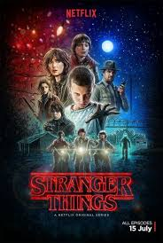
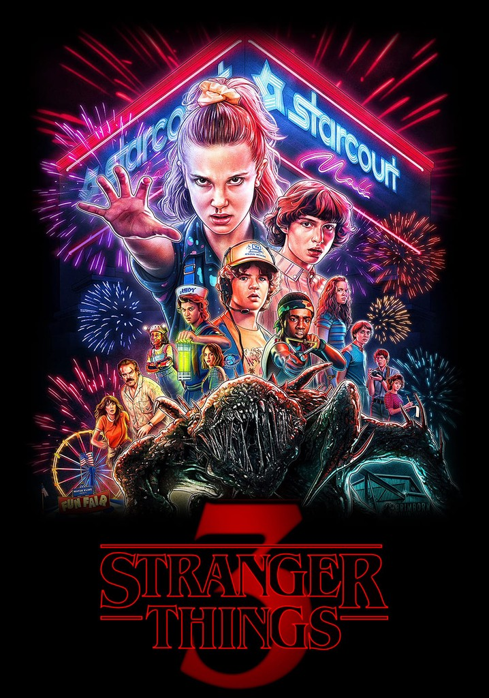

TEMPORADA 1
El inicio del misterio
Cuando un niño desaparece en el pequeño pueblo de Hawkins, sus amigos descubren una misteriosa chica con poderes telequinéticos. Juntos, enfrentan un experimento secreto y una criatura de otro mundo.
TEMPORADA 2

El Otro Lado regresa
Un año después, la vida parece volver a la normalidad, pero algo oscuro sigue acechando desde el Otro Lado. Will comienza a tener visiones extrañas, y un nuevo peligro amenaza con devorar Hawkins.
TEMPORADA 3
El verano del caos
El verano llega con el nuevo centro comercial Starcourt, pero bajo su fachada brillante se esconde una amenaza rusa y el regreso del mal. Entre romances adolescentes y terror sobrenatural, nada volverá a ser igual.
TEMPORADA 4

El ascenso de Vecna
Mientras el grupo está separado, una nueva fuerza oscura emerge desde el pasado: Vecna. Las pesadillas se vuelven reales y Hawkins enfrenta su batalla más aterradora hasta ahora.